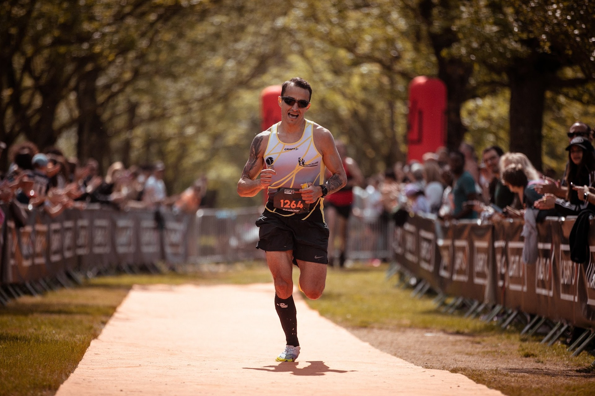
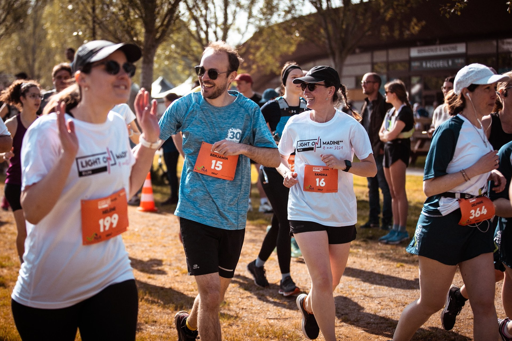
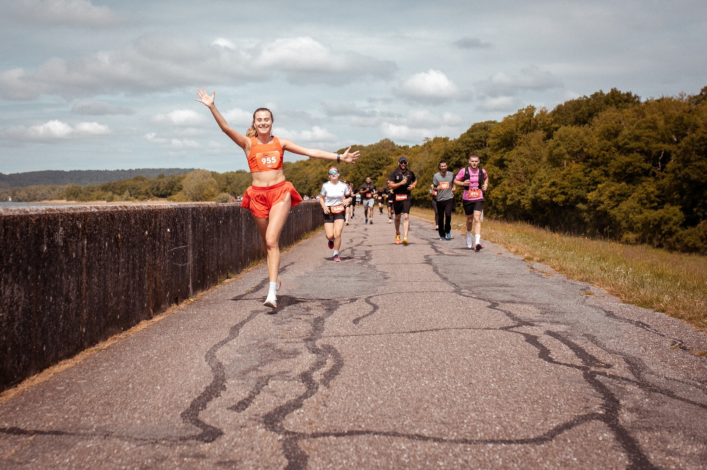

Les courses · 10 et 21,1 KM À vous de choisir.
Le 10 KM* pour un premier dossard ou une reprise, le Semi-Marathon** pour le grand tour du lac.
Les deux formats en un coup d'œil.
Jeudi 6 mai 2027, départ et arrivée au Lac de Madine (Nonsard-Lamarche). Même lac, deux façons d'en faire le tour, sans barrière horaire.
| 10 KM* | Semi-Marathon** | |
|---|---|---|
| Distance | 10 km | 21,1 km |
| Départ | 11h30 | 9h00 |
| Retrait des dossards | Mer. 17h-19h & jeu. 7h30-11h00 | Mer. 17h-19h & jeu. 7h30-8h30 |
| Tarif | 18 € jusqu'au 31/01, 19 € jusqu'au 31/03, 20 € ensuite | 23 € jusqu'au 31/01, 24 € jusqu'au 31/03, 25 € ensuite |
| Catégorie minimale | Cadet(te) - né(e) en 2011 et avant | Junior - né(e) en 2009 et avant |
| Ravitaillements | 1 liquide au km 5 + arrivée | 1 liquide au km 6, liquide et solide aux km 12 et 15 + arrivée |
| Barrière horaire | Aucune | Aucune |
| Pour qui ? | Premier dossard, reprise, envie de courir en famille | Coureurs qui veulent se tester sur la distance reine du bitume |
Glissez pour voir les deux formats
10 KM*
Un tour de lac à plat, un seul ravitaillement à mi-course et l'arrivée au Village LIGHT ON. Parfait pour un premier dossard ou une reprise.

Pour qui ?
Premier 10 km, coureurs réguliers ou envie de courir en famille. Parcours balisé, à plat, sans difficulté technique.
Ravitaillements
Un ravitaillement liquide au km 5, et le ravitaillement complet à l'arrivée. Le Running se court en semi-autonomie.
Pas de barrière horaire
Le 10 KM* est un circuit balisé sans barrière horaire : vous courez à votre rythme.
Très bonne ambiance, on se sent bien.
J'ai adoré la motivation qu'un tel rassemblement peut nous donner (...) Je reviendrai en 2027, c'est sûr !
Glissez pour lire la suite
21,1 KM**
Le grand tour du Lac de Madine : trois ravitaillements sur le parcours, un départ matinal et le bitume du début à la fin.

Pour qui ?
Pour les coureurs à partir de la catégorie Junior qui veulent se tester sur la distance du semi-marathon, sur un parcours plat et balisé.
Ravitaillements
Liquide au km 6, liquide et solide aux km 12 et 15, plus le ravitaillement complet à l'arrivée. Le Running se court en semi-autonomie.
Pas de barrière horaire
Le Semi-Marathon** est un circuit balisé sans barrière horaire : vous courez à votre rythme.
Une superbe organisation, les bénévoles au top (...) Une très belle expérience.
Premier semi marathon parfait.
Sinon c'est chouette, un peu boueux cette année, mdr.
Glissez pour lire la suite
Avant de prendre le départ
Catégories d'âge, certificat ou PPS, matériel, remboursement : tout est dans le règlement.
Vous avez choisi votre distance ?
Inscriptions ouvertes le mardi 20 octobre 2026, 20h00. Rendez-vous le 6 mai 2027.